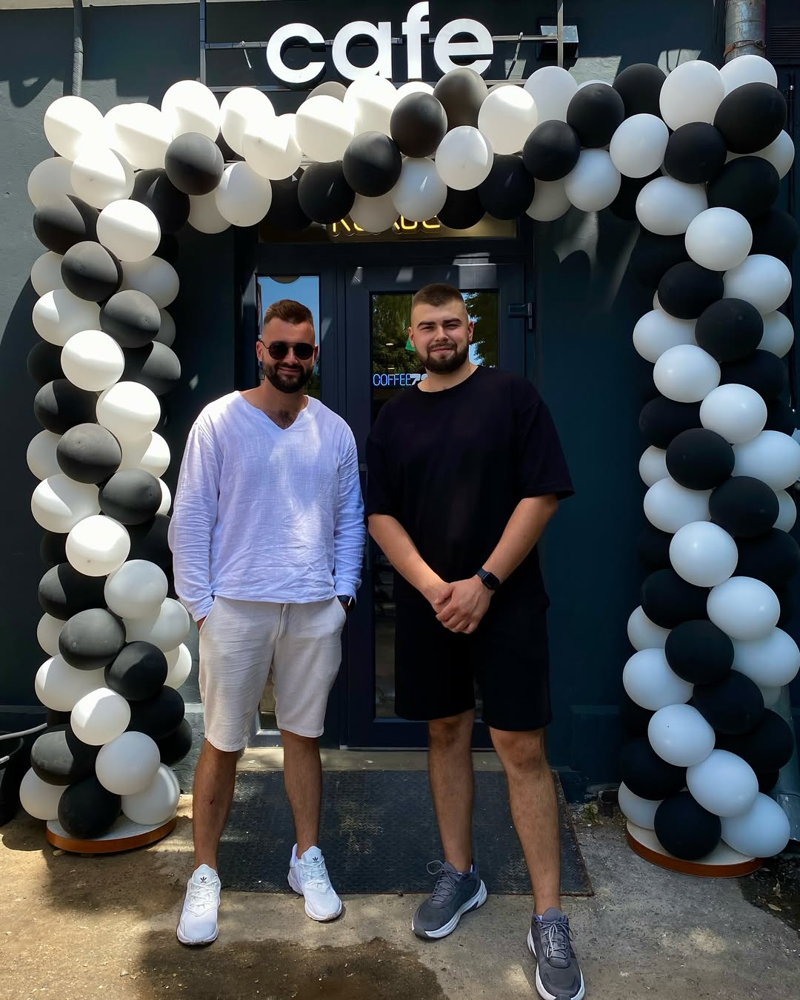

<section class="our-story">
  <div class="our-story__container">
    <div class="our-story__content">
      <div class="our-story__image">
        
      </div>
      <div class="our-story__text">
        <h2 class="our-story__title">Our Story</h2>
        <p class="our-story__paragraph">
          Founded in 2018, Brew & Bite started as a small neighborhood coffee shop with a simple mission:
          to serve exceptional coffee and create a welcoming space for our community.
        </p>
        <p class="our-story__paragraph">
          Today, we continue to roast our beans in-house, bake fresh pastries daily, and maintain that
          same commitment to quality and community that started it all.
        </p>
        <div class="our-story__stats">
          <div class="our-story__stat">
            <h3 class="our-story__stat-number">50k+</h3>
            <p class="our-story__stat-label">Happy Customers</p>
          </div>
          <div class="our-story__stat">
            <h3 class="our-story__stat-number">15</h3>
            <p class="our-story__stat-label">Coffee Varieties</p>
          </div>
          <div class="our-story__stat">
            <h3 class="our-story__stat-number">7</h3>
            <p class="our-story__stat-label">Years Experience</p>
          </div>
        </div>
      </div>
    </div>
  </div>
</section>
